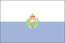
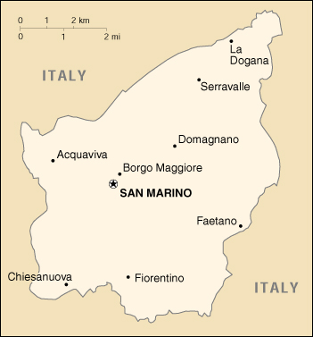

{kind=link}


| San Marino |  |
|
|  | |
| Introduction |
Background: The world's third smallest state also claims to be the world's oldest republic, founded by Saint Marinus (for whom the country is named) in 301 A. D. San Marino's foreign policy is aligned with that of Italy. Social and political trends in the republic also track closely with those of its larger neighbor.
| Geography |
Location: Southern Europe, an enclave in central Italy
Geographic coordinates: 43 46 N, 12 25 E
Map references: Europe
Area:
total:
60.5 sq km
land:
60.5 sq km
water:
0 sq km
Area - comparative: about 0.3 times the size of Washington, DC
Land boundaries:
total:
39 km
border countries:
Italy 39 km
Coastline: 0 km (landlocked)
Maritime claims: none (landlocked)
Climate: Mediterranean; mild to cool winters; warm, sunny summers
Terrain: rugged mountains
Elevation extremes:
lowest point:
Torrente Ausa 55 m
highest point:
Monte Titano 749 m
Natural resources: building stone
Land use:
arable land:
17%
permanent crops:
0%
permanent pastures:
0%
forests and woodland:
0%
other:
83% (1993 est.)
Irrigated land: NA sq km
Natural hazards: NA
Environment - current issues: NA
Environment - international agreements:
party to:
Biodiversity, Climate Change, Desertification, Nuclear Test Ban
signed, but not ratified:
Air Pollution
Geography - note: landlocked; smallest independent state in Europe after the Holy See and Monaco; dominated by the Apennines
| People |
Population: 26,937 (July 2000 est.)
Age structure:
0-14 years:
16% (male 2,181; female 2,038)
15-64 years:
68% (male 8,992; female 9,425)
65 years and over:
16% (male 1,849; female 2,452) (2000 est.)
Population growth rate: 1.49% (2000 est.)
Birth rate: 10.88 births/1,000 population (2000 est.)
Death rate: 7.65 deaths/1,000 population (2000 est.)
Net migration rate: 11.62 migrant(s)/1,000 population (2000 est.)
Sex ratio:
at birth:
1 male(s)/female
under 15 years:
1.07 male(s)/female
15-64 years:
0.95 male(s)/female
65 years and over:
0.75 male(s)/female
total population:
0.94 male(s)/female (2000 est.)
Infant mortality rate: 6.33 deaths/1,000 live births (2000 est.)
Life expectancy at birth:
total population:
81.14 years
male:
77.57 years
female:
85.02 years (2000 est.)
Total fertility rate: 1.29 children born/woman (2000 est.)
Nationality:
noun:
Sammarinese (singular and plural)
adjective:
Sammarinese
Ethnic groups: Sammarinese, Italian
Religions: Roman Catholic
Languages: Italian
Literacy:
definition:
age 10 and over can read and write
total population:
96%
male:
97%
female:
95% (1976 est.)
| Government |
Country name:
conventional long form:
Republic of San Marino
conventional short form:
San Marino
local long form:
Repubblica di San Marino
local short form:
San Marino
Data code: SM
Government type: republic
Capital: San Marino
Administrative divisions: 9 municipalities (castelli, singular - castello); Acquaviva, Borgo Maggiore, Chiesanuova, Domagnano, Faetano, Fiorentino, Monte Giardino, San Marino, Serravalle
Independence: 301 (by tradition)
National holiday: Anniversary of the Foundation of the Republic, 3 September (301)
Constitution: 8 October 1600; electoral law of 1926 serves some of the functions of a constitution
Legal system: based on civil law system with Italian law influences; has not accepted compulsory ICJ jurisdiction
Suffrage: 18 years of age; universal
Executive branch:
chief of state:
cochiefs of state Captain Regent Loris FRANCINI and Captain Regent Alberto CECCHETTI (for the period 1 April 1999-30 September 1999)
head of government:
Secretary of State for Foreign and Political Affairs Gabriele GATTI (since NA July 1986)
cabinet:
Congress of State elected by the Great and General Council for a five-year term
elections:
cochiefs of state (captain regents) elected by the Great and General Council for a six-month term; election last held NA September 1999 (next to be held NA March 2000); secretary of state for foreign and political affairs elected by the Great and General Council for a five-year term; election last held NA June 1998 (next to be held NA June 2003)
election results:
Loris FRANCINI and Alberto CECCETTI elected captain regents; percent of legislative vote - NA; Gabriele GATTI reelected secretary of state for foreign and political affairs; percent of legislative vote - NA
note:
the popularly elected parliament (Grand and General Council) selects two of its members to serve as the Captains Regent (cochiefs of state) for a six-month period; they preside over meetings of the Grand and General Council and its cabinet (Congress of State) which has ten other members, all selected by the Grand and General Council; assisting the captains regent are three secretaries of state - Foreign Affairs, Internal Affairs, and Finance - and several additional secretaries; the secretary of state for Foreign Affairs has assumed many of the prerogatives of a prime minister
Legislative branch:
unicameral Grand and General Council or Consiglio Grande e Generale (60 seats; members are elected by direct popular vote to serve five-year terms)
elections:
last held 31 May 1998 (next to be held by NA May 2003)
election results:
percent of vote by party - PDCS 40.8%, PSS 23.3%, PPDS 18.6%, APDS 9.8%, RC 3.3%, SR 4.2%; seats by party - PDCS 25, PSS 14, PPDS 11, APDS 6, RC 2, SR 2
Judicial branch: Council of Twelve or Consiglio dei XII
Political parties and leaders: Communist Refoundation or RC [Giuseppe AMICHI]; Democratic Movement or MD [Emilio DELLA BALDA]; San Marino Christian Democratic Party or PDCS [Cesare Antonio GASPERONI, secretary general]; San Marino Popular Democratic Party or APDS [Antonella MULARONI]; San Marino Progressive Democratic Party or PPDS [Stefano MACINA, secretary general]; San Marino Socialist Party or PSS [Maurizio RATTINI, secretary general]; Socialists for Reform or SR [Renzo GIARDI]
International organization participation: CE, ECE, ICAO, ICFTU, ICRM, IFRCS, ILO, IMF, IOC, IOM (observer), ITU, OPCW, OSCE, UN, UNCTAD, UNESCO, UPU, WHO, WIPO, WToO
Diplomatic representation in the US:
San Marino does not have an embassy in the US
honorary consulate(s) general:
Washington, DC, and New York
honorary consulate(s):
Detroit
Diplomatic representation from the US: the US does not have an embassy in San Marino; the US Consul General in Florence (Italy) is accredited to San Marino
Flag description: two equal horizontal bands of white (top) and light blue with the national coat of arms superimposed in the center; the coat of arms has a shield (featuring three towers on three peaks) flanked by a wreath, below a crown and above a scroll bearing the word LIBERTAS (Liberty)
| Economy |
Economy - overview: The tourist sector contributes over 50% of GDP. In 1997 more than 3.3 million tourists visited San Marino. The key industries are banking, wearing apparel, electronics, and ceramics. Main agricultural products are wine and cheeses. The per capita level of output and standard of living are comparable to those of Italy, which supplies much of its food.
GDP: purchasing power parity - $500 million (1997 est.)
GDP - real growth rate: NA%
GDP - per capita: purchasing power parity - $20,000 (1997 est.)
GDP - composition by sector:
agriculture:
NA%
industry:
NA%
services:
NA%
Population below poverty line: NA%
Household income or consumption by percentage share:
lowest 10%:
NA%
highest 10%:
NA%
Inflation rate (consumer prices): 2% (1997)
Labor force: 15,600 (1995)
Labor force - by occupation: services 60%, industry 38%, agriculture 2% (1998 est.)
Unemployment rate: 3.6% (April 1996)
Budget:
revenues:
$320 million
expenditures:
$320 million, including capital expenditures of $26 million (1995 est.)
Industries: tourism, banking, textiles, electronics, ceramics, cement, wine
Industrial production growth rate: NA%
Electricity - production: NA kWh
Electricity - production by source:
fossil fuel:
NA%
hydro:
NA%
nuclear:
NA%
other:
NA%
Electricity - consumption: NA kWh
Electricity - exports: NA kWh
Electricity - imports:
NA kWh
note:
electricity supplied by Italy
Agriculture - products: wheat, grapes, corn, olives; cattle, pigs, horses, beef, cheese, hides
Exports: trade data are included with the statistics for Italy
Exports - commodities: building stone, lime, wood, chestnuts, wheat, wine, baked goods, hides, ceramics
Imports: trade data are included with the statistics for Italy
Imports - commodities: wide variety of consumer manufactures, food
Debt - external: $NA
Economic aid - recipient: $NA
Currency: 1 Italian lira (Lit) = 100 centesimi; note - also mints its own coins
Exchange rates: euros per US$1 - 0.9867 (January 2000), 0.9386 (1999); Italian lire (Lit) per US$1 - 1,668.7 (January 1998), 1,736.2 (1998), 1,703.1 (1997), 1,542.9 (1996), 1,628.9 (1995)
Fiscal year: calendar year
| Communications |
Telephones - main lines in use: 18,000 (1998)
Telephones - mobile cellular: 3,010 (1998)
Telephone system:
domestic:
automatic telephone system completely integrated into Italian system
international:
microwave radio relay and cable connections to Italian network; no satellite earth stations
Radio broadcast stations: AM 0, FM 3, shortwave 0 (1998)
Radios: 16,000 (1997)
Television broadcast stations: 1 (San Marino residents also receive broadcasts from Italy) (1997)
Televisions: 9,000 (1997)
Internet Service Providers (ISPs): 1 (1999)
| Transportation |
Railways: 0 km; note - there is a 1.5 km cable railway connecting the city of San Marino to Borgo Maggiore
Highways:
total:
220 km
paved:
NA km
unpaved:
NA km
Ports and harbors: none
Airports: none
| Military |
Military branches: Voluntary Military Force, Police Force
Military expenditures - dollar figure: $700,000 (FY98)
Military expenditures - percent of GDP: NA%
| Transnational Issues |
Disputes - international: none